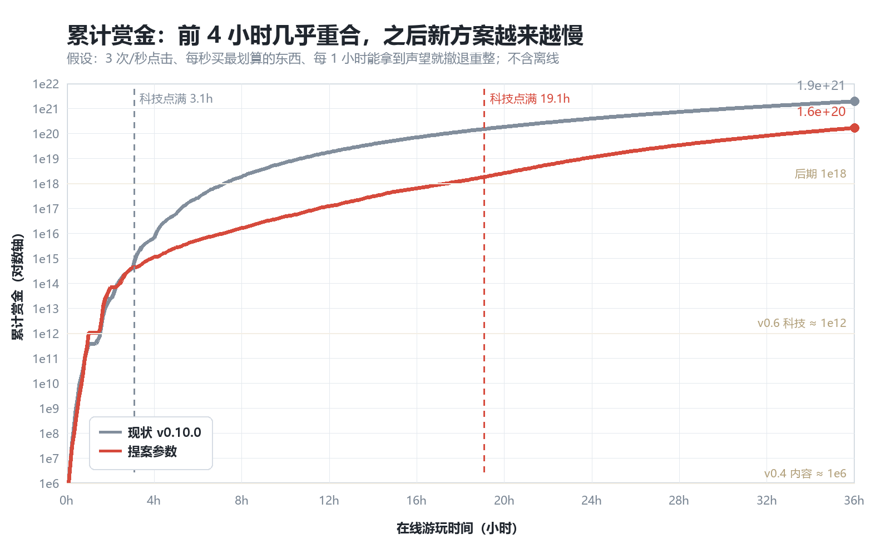
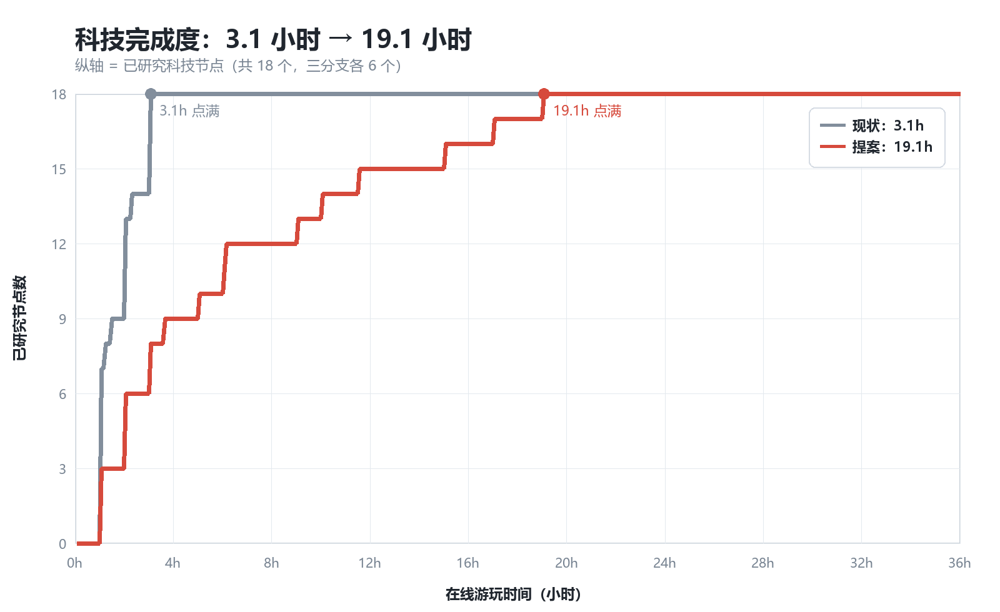
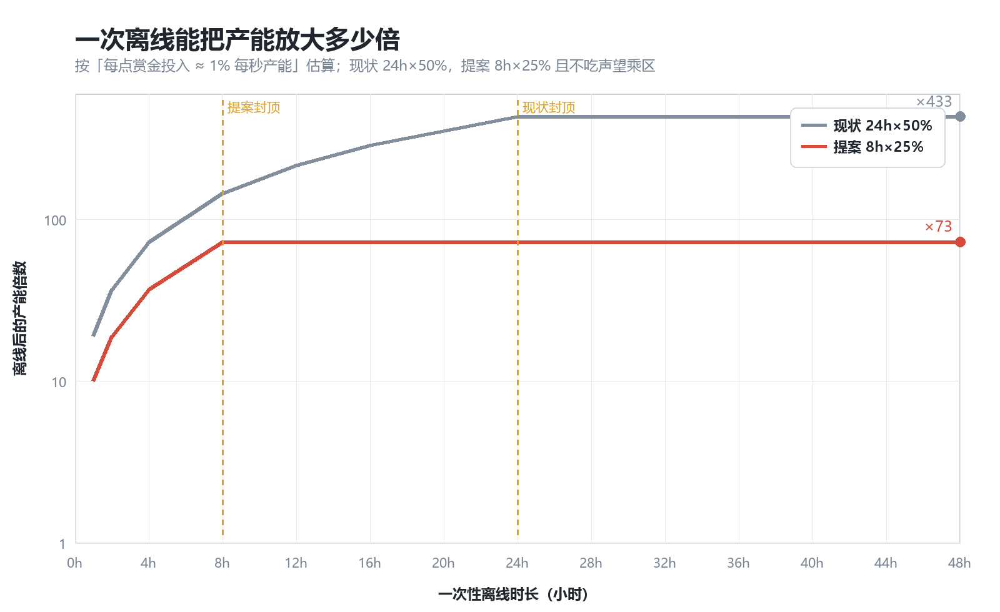
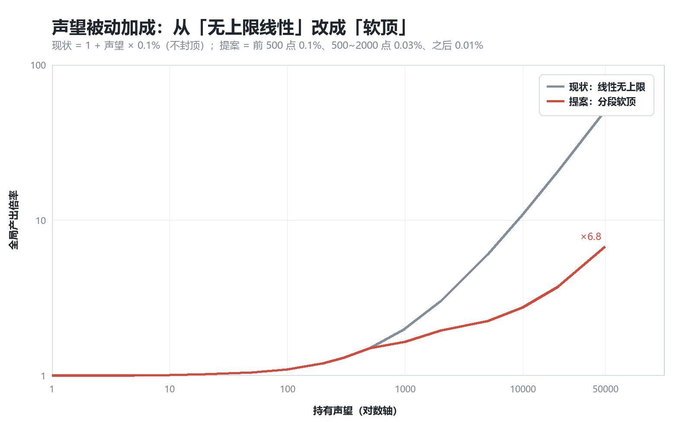
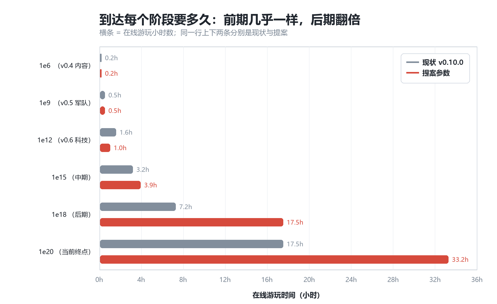

数值平衡对比报告
tools/balance_sim.py · 出图 tools/balance_charts.py · 原始数据 docs/balance/data.json
状态：已落地。这套参数已于 2026-11-04 实装为 v0.11.0（见 CHANGELOG）， 本页保留作为调整依据与后续调参的基线。
这份报告只回答一个问题：把上一轮那组建议参数落地之后，玩家的“进度曲线”会变成什么样。 所有数字来自一个固定策略的模拟玩家（3 次/秒点击、每秒买最划算的东西、有资格就撤退重整）， 所以绝对值不等于你的真实体感，但两条曲线的相对关系是可靠的。
① 累计赏金曲线：前面一样，后面分叉

这张图能解释为什么“只动一个数字没用”：前期几乎完全一样，说明改动没有破坏开局手感； 真正拉开差距的是 6 小时以后——这段正是你原来“几小时就打通”的部分。
② 科技完成度：从 3.1 小时变成 19.1 小时

这是本次改动的核心：科技总花费 ×3（1296 → 3888 蓝图），同时把“声望换蓝图”的 固定价 10:1 改成 25:1 起、每兑换 10 张再涨 15%。后面那条特别关键—— 它堵死了“声望一多就无限扫货”的后门，也让你必须继续点枪掉蓝图。
③ 一次离线值多少：从“时间机器”变成“补充包”

为什么这条最重要：现在的离线是按当前速率白送 12 小时产出（24h × 50% 效率；军医拉满 150% 时是 36 小时）， 而游戏里“产能 ≈ 投入的 1%”，所以一次满时长离线等于产能 ×433（满效率时 ×1300）。 连开三次就是 ×8 亿——什么中期节奏都挡不住。提案把单次压到 ×73， 三次约 ×39 万：仍然是“睡一觉有收获”，但不再能跳过整个阶段。
④ 声望被动：从“无上限线性”改成“软顶”

线性 × 声望收益（√ 本局产出）会形成自加速：重置得越多，下一局越快。 加软顶之后，声望仍然是长期动力，但不会再出现“重置 20 次后产能自己起飞”。
⑤ 一张图看完：到达每个阶段要多久

| 阶段 | 现状 | 提案 | 变化 |
|---|---|---|---|
| 1e6（v0.4 内容） | 0.2h | 0.2h | 不变 |
| 1e9（v0.5 军队） | 0.5h | 0.5h | 不变 |
| 1e12（v0.6 科技） | 1.6h | 1.0h | 略快（里程碑给的加成前置） |
| 1e15（中期） | 3.2h | 3.9h | ≈ 持平 |
| 1e18（后期） | 7.2h | 17.5h | ×2.4 |
| 1e20（当前终点） | 17.5h | 33.2h | ×1.9 |
| 科技 18/18 点满 | 3.1h | 19.1h | ×6.2 |
具体改了哪些数
| 项 | 现状 | 提案 | 作用 |
|---|---|---|---|
离线时长上限 OFFLINE_MAX_HOURS | 24h | 8h | 把离线从“时间机器”压成“补充包” |
离线效率 OFFLINE_BASE_EFF / 上限 | 50% / 150% | 25% / 60% | |
| 离线是否吃声望乘区 | 吃 | 不吃（只算基础产出） | |
声望被动 PRESTIGE_BONUS_PER | 0.1%/点，无上限 | 分段 0.1% / 0.03% / 0.01% | 断掉自加速 |
| 科技总蓝图 | 1296 | 3888（节点成本 ×3） | 科技轴拉长 6 倍 |
蓝图兑换 BP_PRESTIGE_COST | 固定 10:1 | 25:1 起，每 10 张 +15% | 堵后门 |
开火掉蓝图 CLICK_BP_CHANCE / 尸潮倍率 | 0.2% / ×5 | 0.1% / ×3 | 掉落不再是主要来源 |
武器成本指数 costMult | 1.15 全档 | 1.15 → 1.23 逐档抬高 | 后期涨价更快 |
战术装备 GEAR（7 件一次性） | 买断，全局 ×18 点击 / ×4.5 自动 | 武器里程碑（10/25/50/100 把）加法桶 | 你提的那套改造 |
里程碑的数值长什么样
每把武器按持有把数解锁四档，效果是加法桶（不跟科技乘区连乘），外加该武器自身的产出倍率：
| 把数 | 全局自动 | 全局单发 | 该武器自身 |
|---|---|---|---|
| 10 | +20% | +30% | 产出 ×1.30 / 单发 ×1.20 |
| 25 | +30% | +40% | 产出 ×1.50 / 单发 ×1.35 |
| 50 | +40% | +50% | 产出 ×1.70 / 单发 ×1.50 |
| 100 | +60% | +70% | 产出 ×2.00 / 单发 ×1.70 |
为什么用加法而不是连乘：现在的乘区已经很多（装备 ×18、科技 ×3~7、声望 ×N）。 再往里加连乘区会指数爆炸；加法桶只跟“你手里有几把枪”线性相关，好调也好读。
怎么验证我算得对不对
脚本都在仓库里，可以自己跑、自己改参数看曲线：
python tools/balance_sim.py—— 跑两套参数，打印各阶段的到达时间，写docs/balance/data.jsonpython tools/balance_charts.py—— 按 data.json 重画这五张图- 想试别的力度：改
balance_sim.py里的NEW_PARAMS（tech_scale / bp_price / off_h / off_eff / ms_scale），重跑两条命令即可
这份模拟的可信度边界
- 玩家策略是“最优购买”，真实玩家会慢一些——所以绝对值偏乐观，但两条曲线的相对差距（3.1h vs 19.1h）是结构性的，不依赖手速。
- 模拟里没有士兵/军医/军官，也没有尸潮的精确上下线，只有折算后的掉率期望；这些对“形状”影响小。
- 离线曲线用“每点投入 ≈ 1% 每秒产能”估算，这是由
rate/baseCost推出来的，误差 ±30% 以内。 - 最需要你在真机上校准的是1e19 之后的坡度：如果觉得 33 小时太长，把
tech_scale从 3.0 降到 2.0 就会落在 ~12 小时。
落地记录（v0.11.0）
- 第一批 · 已落地：离线 8h×25%（不吃声望乘区）、声望分段软顶、科技成本 ×3、兑换 25 起阶梯涨价。存档结构只多了一个
bpBought。 - 第二批 · 已落地：战术装备 → 军械里程碑。由
state.weapons推导，没有新增存档字段；武器卡多了一行进度提示，跨档时弹 toast。 - 收尾 · 已完成：CHANGELOG 记了 v0.11.0，
sw.js的CACHE升到dse-v19，冒烟测试 161 条断言全绿。
下一步只需要真机跑几天，重点看 1e18 之后的坡度和离线的实际手感；要微调就改 NEW_PARAMS 重跑模拟。